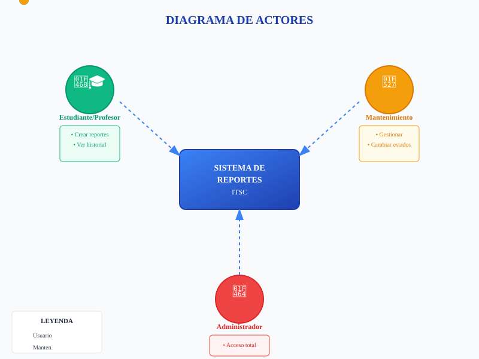
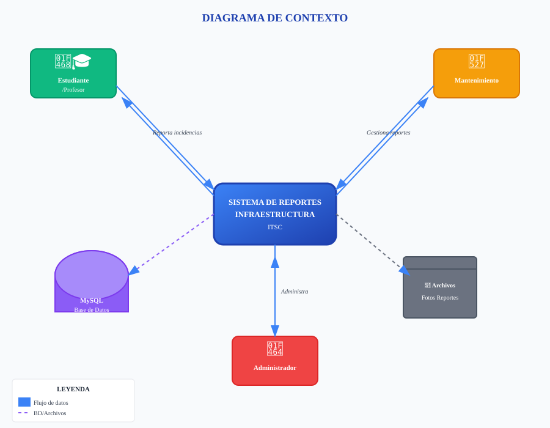
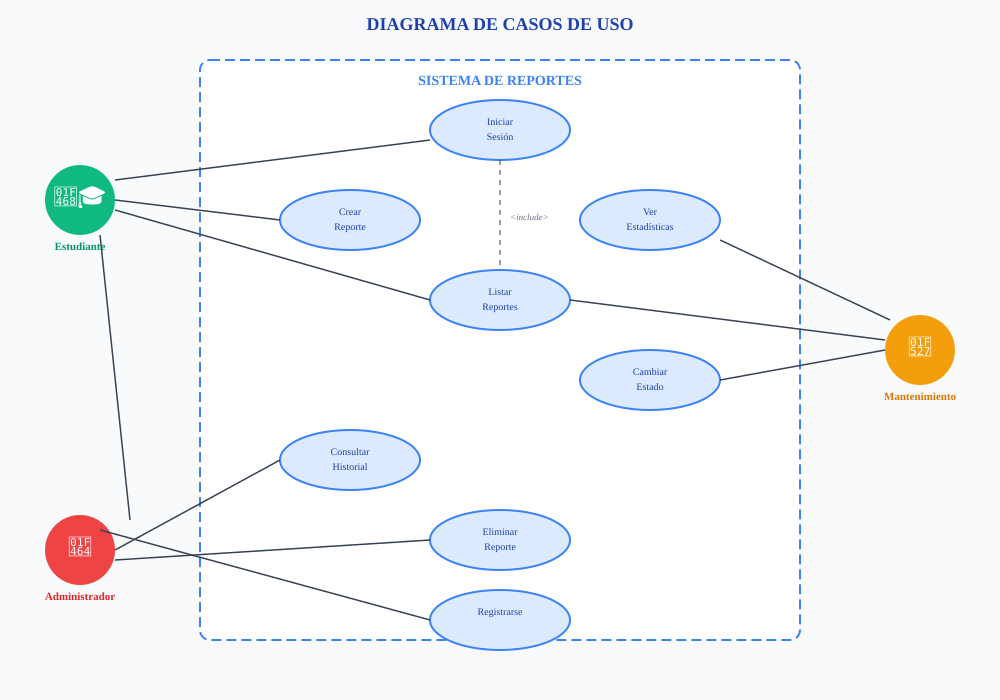
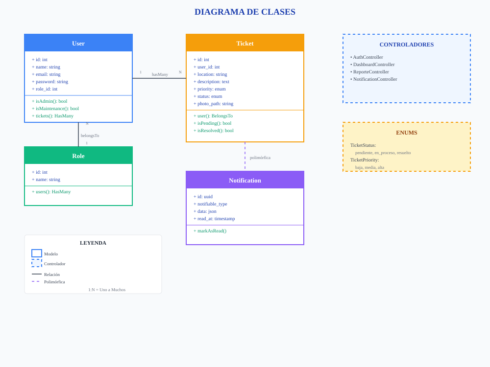
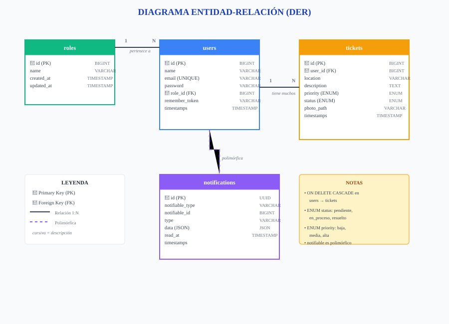
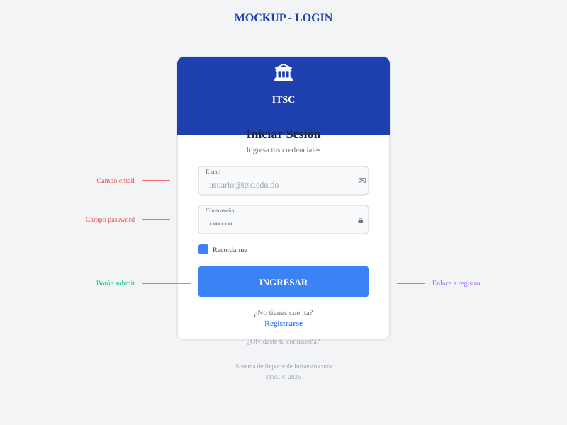
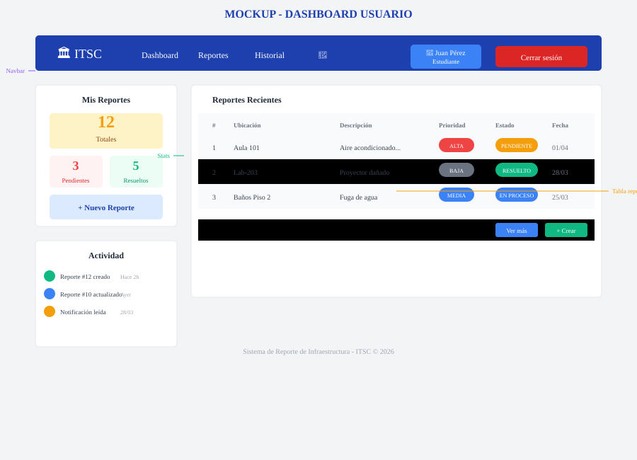
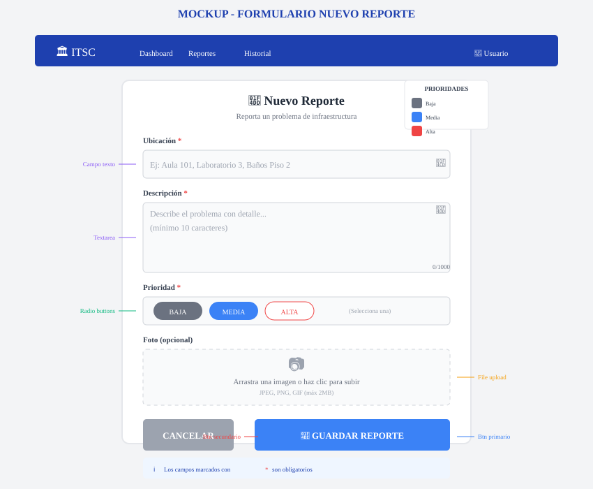
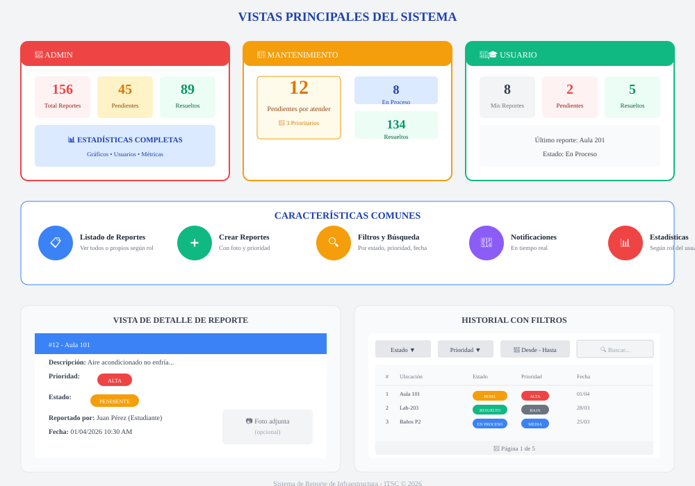
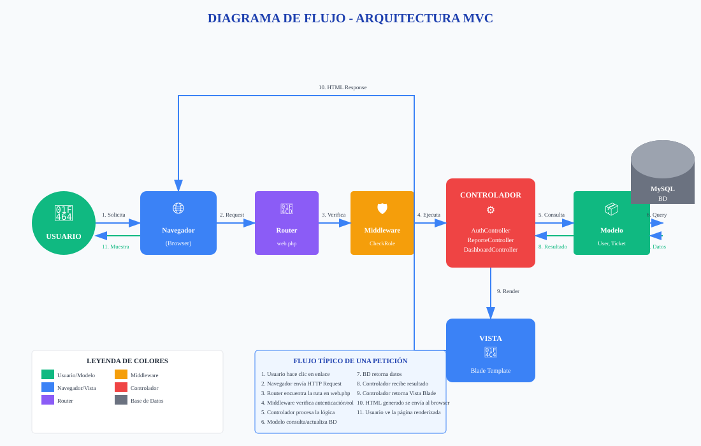

2. INTRODUCCIÓN
2.1 Propósito del Documento
El presente documento tiene como propósito especificar de manera completa y detallada los requisitos de software para el Sistema de Reporte de Problemas de Infraestructura del Instituto Técnico Superior Comunitario (ITSC). Esta especificación de requisitos de software (SRS, por sus siglas en inglés Software Requirements Specification) sirve como un acuerdo formal entre el equipo de desarrollo y las partes interesadas, describiendo las funcionalidades, restricciones y comportamientos esperados del sistema.
Este documento está dirigido a los evaluadores de la asignatura SOF-111 (Construcción de Software), así como a futuros desarrolladores que puedan dar continuidad al proyecto en cuatrimestres posteriores. La documentación sigue los estándares IEEE para especificación de requisitos de software, adaptados al contexto académico de la institución.
2.2 Descripción General del Sistema
El Sistema de Reporte de Problemas de Infraestructura es una aplicación web diseñada para digitalizar y optimizar el proceso de comunicación entre la comunidad educativa del ITSC y el departamento de mantenimiento. La plataforma permite a estudiantes, profesores y personal administrativo reportar incidencias relacionadas con la infraestructura del instituto de manera rápida y sencilla, mientras que el personal de mantenimiento puede gestionar, actualizar y resolver dichos reportes de forma organizada y eficiente.
El sistema centraliza todas las solicitudes de mantenimiento en una base de datos única, eliminando los procesos manuales y descentralizados que anteriormente generaban pérdida de información y falta de seguimiento. Cada reporte incluye información detallada como ubicación, descripción del problema, nivel de prioridad y evidencia fotográfica opcional, lo que facilita la labor del personal de mantenimiento al contar con todos los elementos necesarios para atender cada incidencia.
2.3 Tecnologías Utilizadas
| Tecnología | Versión | Propósito |
|---|---|---|
| PHP | 8.2+ | Lenguaje de programación del backend |
| Laravel | 12.x | Framework PHP para desarrollo web |
| MySQL | 8.0+ | Sistema de gestión de base de datos relacional |
| Tailwind CSS | CDN | Framework de CSS para diseño responsive |
| Blade | Laravel | Motor de plantillas para vistas |
2.4 Actores Principales del Sistema
El sistema cuenta con tres actores principales, cada uno con permisos y funcionalidades específicas:
- Administrador: Usuario con acceso completo a todas las funcionalidades del sistema. Puede gestionar usuarios, visualizar estadísticas generales, crear, editar y eliminar reportes.
- Personal de Mantenimiento: Usuario encargado de atender los reportes de infraestructura. Puede visualizar todos los reportes y cambiar el estado de los mismos.
- Estudiante/Profesor: Usuario final que utiliza el sistema principalmente para reportar problemas de infraestructura y ver sus propios reportes.
2.5 Estructura del Documento
📋 Las 15 Secciones del SRS
- 1. Portada
- 2. Introducción
- 3. Problema a Resolver
- 4. Objetivo del Sistema
- 5. Alcance del Sistema
- 6. Actores del Sistema
- 7. Requerimientos Funcionales
- 8. Requerimientos No Funcionales
- 9. Casos de Uso Detallados
- 10. Diagramas del Sistema
- 11. Modelo de Datos
- 12. Mockups
- 13. Arquitectura MVC
- 14. Conclusión
- 15. Anexos
3. PROBLEMA A RESOLVER
3.1 Contexto Actual
En el Instituto Técnico Superior Comunitario (ITSC), el proceso de reporte y atención de problemas de infraestructura se ha llevado a cabo tradicionalmente mediante métodos manuales y descentralizados. Cuando un estudiante, profesor o miembro del personal administrativo identifica una incidencia en la infraestructura del instituto, el proceso actual sigue los siguientes pasos:
- La persona identifica el problema en sus instalaciones
- La persona debe desplazarse físicamente hasta las oficinas de mantenimiento o dirección
- Se llena un formulario en papel con los datos básicos del problema
- El formulario se deposita en una bandeja de entrada
- El personal de mantenimiento revisa periódicamente la bandeja
- Se asigna manualmente la incidencia a un técnico disponible
- Se atiende el problema cuando hay recursos disponibles
- No existe un mecanismo formal de seguimiento para el reportante
3.2 Limitaciones Identificadas
| # | Limitación | Descripción |
|---|---|---|
| 1 | Descentralización | Los reportes se reciben en múltiples puntos físicos sin un registro centralizado |
| 2 | Pérdida de información | Los formularios en papel se extravían con frecuencia o se deterioran |
| 3 | Falta de seguimiento | El reportante no tiene forma de conocer el estado de su reporte |
| 4 | Ineficiencia temporal | El tiempo entre el reporte y la atención puede ser excesivamente largo |
| 5 | Ausencia de priorización | No existe un mecanismo claro para priorizar reportes urgentes |
| 6 | Falta de estadísticas | No se generan reportes estadísticos para la toma de decisiones |
3.3 Impacto del Problema
Impacto en Estudiantes y Profesores
- Frustración al no poder reportar problemas de manera sencilla y rápida
- Percepción negativa de la capacidad de respuesta del instituto
- Problemas de infraestructura no atendidos afectan las condiciones educativas
- Desplazamientos innecesarios para realizar reportes presenciales
Impacto en Personal de Mantenimiento
- Tiempo excesivo dedicado a organizar y procesar reportes en papel
- Dificultad para priorizar y asignar recursos eficientemente
- Problemas para coordinar entre miembros del equipo
- Imposibilidad de demostrar el trabajo realizado
Impacto en Administración
- Falta de datos para planificación presupuestaria
- Imposibilidad de monitorear el desempeño del departamento
- Dificultad para garantizar estándares de infraestructura
- Quejas de la comunidad estudiantil y docente
4. OBJETIVO DEL SISTEMA
4.1 Objetivo General
Desarrollar e implementar un sistema web de gestión de reportes de infraestructura basado en la arquitectura MVC utilizando el framework Laravel, que permita a la comunidad del Instituto Técnico Superior Comunitario (ITSC) reportar, dar seguimiento y gestionar de manera eficiente las incidencias relacionadas con la infraestructura del instituto, centralizando la información en una base de datos única, facilitando la comunicación entre los diferentes actores del sistema y proporcionando herramientas estadísticas para la toma de decisiones administrativas.
4.2 Objetivos Específicos
Objetivos Funcionales
| ID | Objetivo |
|---|---|
| OF-01 | Implementar sistema de autenticación: Desarrollar un módulo de login y registro que permita a los usuarios acceder al sistema de manera segura mediante credenciales válidas. |
| OF-02 | Gestionar creación de reportes: Permitir a los usuarios autenticados crear nuevos reportes de incidencias, incluyendo campos obligatorios como ubicación, descripción y prioridad. |
| OF-03 | Visualizar listado de reportes: Mostrar un listado completo de todos los reportes existentes, con capacidad de filtrado por estado, prioridad y fecha. |
| OF-04 | Actualizar estado de tickets: Habilitar la funcionalidad para que el personal autorizado pueda cambiar el estado de los reportes: Pendiente → En Proceso → Resuelto. |
| OF-05 | Consultar historial de incidencias: Proporcionar una vista de historial que permita a los usuarios consultar todos sus reportes anteriores. |
| OF-06 | Implementar control de roles: Diferenciar entre tres tipos de usuarios con permisos y funcionalidades específicas. |
Objetivos Técnicos
| ID | Objetivo |
|---|---|
| OT-01 | Implementar arquitectura MVC: Estructurar el código siguiendo el patrón Modelo-Vista-Controlador. |
| OT-02 | Utilizar framework Laravel 12: Aprovechar las características del framework Laravel versión 12 o superior. |
| OT-03 | Diseñar base de datos relacional: Implementar una base de datos MySQL con las tablas necesarias. |
| OT-04 | Aplicar validaciones del servidor: Implementar validaciones utilizando Form Requests de Laravel. |
| OT-05 | Garantizar seguridad de contraseñas: Almacenar contraseñas utilizando el algoritmo de hash bcrypt. |
4.3 Alcance del Objetivo
Lo que SÍ incluye el proyecto para SOF-111
✓ Sistema de autenticación (login y registro)
✓ Manejo de sesiones de usuario
✓ Creación de tickets/reportes
✓ Listado de reportes con filtros básicos
✓ Cambio de estado del ticket (Pendiente → En Proceso → Resuelto)
✓ Consulta de historial de incidencias
✓ Control de roles (Admin, Mantenimiento, Usuario)
✓ Validaciones de formularios
✓ Notificaciones básicas del sistema
✓ Documentación SRS completa
Lo que NO incluye para SOF-111
✗ Módulo de mantenimiento preventivo programado
✗ Sistema de asignación automática de técnicos
✗ Generación de reportes PDF/Excel exportables
✗ Integración con correo electrónico para notificaciones
✗ Aplicación móvil nativa
5. ALCANCE DEL SISTEMA
5.1 Alcance Funcional
| ID | Funcionalidad | Descripción | Prioridad |
|---|---|---|---|
| AF-01 | Autenticación de usuarios | Login con email y contraseña, registro de nuevos usuarios | Alta |
| AF-02 | Gestión de sesiones | Mantener sesión activa durante la navegación | Alta |
| AF-03 | Creación de reportes | Formulario para crear nuevos tickets con ubicación, descripción, prioridad | Alta |
| AF-04 | Listado de reportes | Vista de tabla con todos los reportes visibles según el rol | Alta |
| AF-05 | Edición de estado | Cambiar estado del ticket - solo Admin y Mantenimiento | Alta |
| AF-06 | Historial de reportes | Vista de historial con filtros avanzados | Media |
| AF-07 | Notificaciones | Sistema de notificaciones internas | Media |
| AF-08 | Dashboard por rol | Panel principal personalizado según el rol | Alta |
5.2 Alcance Técnico
| Categoría | Tecnología/Estándar | Versión/Descripción |
|---|---|---|
| Lenguaje de Programación | PHP | Versión 8.2 o superior |
| Framework Backend | Laravel | Versión 12.x |
| Base de Datos | MySQL / MariaDB | Versión 8.0 o superior |
| ORM | Eloquent | Incluido en Laravel |
| Motor de Plantillas | Blade | Incluido en Laravel |
| Framework CSS | Tailwind CSS | Versión CDN (3.x) |
| Arquitectura | MVC | Modelo-Vista-Controlador |
| Seguridad | bcrypt | Para encriptación de contraseñas |
5.3 Criterios de Aceptación
| # | Criterio | Verificación |
|---|---|---|
| CA-01 | El sistema permite iniciar sesión con credenciales válidas | Prueba funcional de login |
| CA-02 | El sistema permite registrar nuevos usuarios | Prueba funcional de registro |
| CA-03 | El sistema diferencia correctamente entre los 3 roles | Prueba de permisos por rol |
| CA-04 | Un usuario autenticado puede crear un nuevo reporte | Prueba de creación de ticket |
| CA-05 | Admin y Mantenimiento pueden cambiar el estado de un ticket | Prueba de actualización |
| CA-06 | El flujo de estados funciona correctamente | Prueba de flujo completo |
| CA-07 | Las contraseñas están encriptadas en la base de datos | Verificación técnica |
| CA-08 | El sistema implementa arquitectura MVC | Revisión de código |
| CA-09 | La documentación SRS está completa con 15 secciones | Revisión de documento |
6. ACTORES DEL SISTEMA
6.1 Administrador
| Campo | Descripción |
|---|---|
| Nombre del Actor | Administrador |
| Descripción | Usuario con acceso completo a todas las funcionalidades del sistema. Tiene privilegios máximos para gestionar usuarios, reportes y configuración. |
| Responsabilidades |
• Gestionar usuarios del sistema • Visualizar estadísticas generales • Crear, editar y eliminar reportes • Configurar parámetros del sistema • Supervisar el desempeño del departamento de mantenimiento |
Permisos del Administrador
✓ Acceso total al sistema ✓ Gestión de usuarios ✓ Gestión de reportes ✓ Visualización de estadísticas ✓ Cambio de estados ✓ Eliminación de registros
6.2 Personal de Mantenimiento
| Campo | Descripción |
|---|---|
| Nombre del Actor | Personal de Mantenimiento |
| Descripción | Usuario encargado de atender y resolver los reportes de infraestructura. Puede visualizar todos los reportes y actualizar su estado y prioridad. |
| Responsabilidades |
• Revisar reportes entrantes • Actualizar estado de los tickets • Priorizar incidencias • Reportar resolución de problemas |
6.3 Estudiante/Profesor (Usuario)
| Campo | Descripción |
|---|---|
| Nombre del Actor | Estudiante/Profesor |
| Descripción | Usuario final del sistema, miembro de la comunidad educativa del ITSC. Utiliza la plataforma principalmente para reportar problemas de infraestructura. |
| Responsabilidades |
• Reportar problemas de infraestructura • Proporcionar información precisa del problema • Adjuntar evidencia fotográfica cuando sea posible • Consultar el estado de sus reportes |
6.4 Tabla Comparativa de Actores
| Característica | Administrador | Mantenimiento | Estudiante/Profesor |
|---|---|---|---|
| Crear reportes | ✓ | ✓ | ✓ |
| Ver todos los reportes | ✓ | ✓ | ✗ |
| Editar estado | ✓ | ✓ | ✗ |
| Eliminar reportes | ✓ | ✗ | ✗ |
| Gestionar usuarios | ✓ | ✗ | ✗ |
| Ver estadísticas | Completas | Limitadas | Solo propias |

Figura 1: Diagrama de Actores del Sistema - Muestra los tres roles de usuario y sus funcionalidades principales
7. REQUERIMIENTOS FUNCIONALES
Los requerimientos funcionales describen las funciones específicas que el sistema debe implementar. Cada requerimiento está identificado con un código único.
| ID | Requerimiento | Descripción | Prioridad | Actor |
|---|---|---|---|---|
| RF-01 | Autenticación de Usuarios | El sistema debe permitir a los usuarios registrados iniciar sesión mediante email y contraseña válidos. | Alta | Todos |
| RF-02 | Registro de Usuarios | El sistema debe permitir a nuevos usuarios registrarse proporcionando nombre completo, email y contraseña. | Alta | Público |
| RF-03 | Gestión de Sesiones | El sistema debe manejar sesiones de usuario activas durante toda la navegación. | Alta | Todos |
| RF-04 | Cerrar Sesión | El sistema debe permitir a los usuarios autenticados cerrar sesión de manera segura. | Alta | Todos |
| RF-05 | Crear Reporte | El sistema debe permitir a los usuarios autenticados crear nuevos reportes de infraestructura. | Alta | Usuario |
| RF-06 | Listar Reportes | El sistema debe mostrar un listado de reportes en formato de tabla según el rol del usuario. | Alta | Todos |
| RF-07 | Ver Detalle de Reporte | El sistema debe mostrar la información completa de un reporte específico. | Alta | Todos |
| RF-08 | Cambiar Estado del Ticket | El sistema debe permitir al personal autorizado cambiar el estado de un reporte. | Alta | Admin/Mant. |
| RF-09 | Cambiar Prioridad del Ticket | El sistema debe permitir modificar el nivel de prioridad de un reporte. | Media | Admin/Mant. |
| RF-10 | Eliminar Reporte | El sistema debe permitir únicamente al Administrador eliminar reportes del sistema. | Media | Admin |
| RF-11 | Consultar Historial | El sistema debe proporcionar una vista de historial con filtros avanzados. | Media | Usuario |
| RF-12 | Buscar Reportes | El sistema debe permitir buscar reportes mediante texto libre. | Media | Todos |
| RF-13 | Filtrar por Estado | El sistema debe permitir filtrar el listado de reportes por estado. | Media | Todos |
| RF-14 | Filtrar por Prioridad | El sistema debe permitir filtrar el listado de reportes por prioridad. | Baja | Todos |
| RF-15 | Control de Roles | El sistema debe diferenciar entre tres tipos de usuarios y restringir el acceso. | Alta | Sistema |
| RF-16 | Validación de Formularios | El sistema debe validar todos los datos ingresados en los formularios del lado del servidor. | Alta | Sistema |
| RF-17 | Notificaciones de Nuevo Reporte | El sistema debe generar notificaciones automáticas cuando se cree un nuevo reporte. | Media | Sistema |
| RF-18 | Notificaciones de Actualización | El sistema debe generar notificaciones cuando se actualice un reporte. | Media | Sistema |
| RF-19 | Dashboard por Rol | El sistema debe mostrar un panel de control personalizado según el rol del usuario. | Alta | Todos |
| RF-20 | Subida de Archivos | El sistema debe permitir adjuntar una fotografía opcional al crear un reporte. | Media | Usuario |
8. REQUERIMIENTOS NO FUNCIONALES
Los requerimientos no funcionales especifican criterios de calidad, restricciones técnicas y estándares que el sistema debe cumplir.
| ID | Categoría | Requerimiento | Criterio de Medición |
|---|---|---|---|
| RNF-01 | Arquitectura | El sistema debe implementar el patrón de diseño Modelo-Vista-Controlador (MVC) | Separación visible de carpetas |
| RNF-02 | Tecnología | El backend del sistema debe estar desarrollado en Laravel framework versión 12 o superior | Verificación en composer.json |
| RNF-03 | Base de Datos | El sistema debe utilizar MySQL o MariaDB como sistema de gestión de base de datos relacional | Verificación de configuración en .env |
| RNF-04 | Validaciones | Todas las validaciones de datos deben ejecutarse del lado del servidor | Todas las rutas POST/PUT tienen Form Request asociado |
| RNF-05 | Seguridad | Las contraseñas de los usuarios deben almacenarse encriptadas utilizando bcrypt | Verificación en BD: campo password contiene hash de 60 caracteres |
| RNF-06 | Rendimiento | El tiempo de carga de las páginas principales del sistema no debe exceder los 3 segundos | Medición con herramientas como Chrome DevTools |
| RNF-07 | Navegabilidad | La interfaz de usuario debe ser intuitiva y fácil de navegar | Testing con usuarios: 90% completa tareas sin ayuda |
| RNF-08 | Código | El código fuente debe estar organizado, comentado y seguir los estándares PSR | Revisión con PHP_CodeSniffer, Laravel Pint |
| RNF-09 | Disponibilidad | El sistema debe estar disponible el 99% del tiempo durante el horario académico | Monitoreo de uptime |
| RNF-10 | Escalabilidad | La arquitectura del sistema debe permitir la adición de nuevas funcionalidades | Capacidad de agregar nuevos módulos sin modificar núcleo |
| RNF-11 | Compatibilidad | El sistema debe ser compatible con los navegadores web modernos más utilizados | Pruebas cross-browser en 4 navegadores |
| RNF-12 | Responsive Design | La interfaz del sistema debe adaptarse a diferentes tamaños de pantalla | Pruebas en diferentes resoluciones |
| RNF-13 | Manejo de Errores | El sistema debe manejar errores de manera elegante | Verificación de archivos en storage/logs/laravel.log |
| RNF-14 | Consistencia | La interfaz de usuario debe mantener consistencia visual en todas las vistas | Revisión de uso consistente de Tailwind CSS |
| RNF-15 | Accesibilidad | El sistema debe seguir prácticas básicas de accesibilidad web | Verificación con herramientas de accesibilidad |
| RNF-16 | Mantenibilidad | El código debe estar estructurado de manera que facilite su mantenimiento | Complejidad ciclomática baja, funciones cortas |
| RNF-17 | Portabilidad | El sistema debe poder ser desplegado en diferentes entornos | Uso correcto de archivo .env para configuraciones |
| RNF-18 | Integridad de Datos | El sistema debe garantizar que las operaciones de base de datos sean atómicas | Uso de transacciones de base de datos |
9. CASOS DE USO DETALLADOS
9.1 CASO DE USO 1: Iniciar Sesión
| Campo | Descripción |
|---|---|
| ID del Caso de Uso | CU-01 |
| Nombre | Iniciar Sesión |
| Actor Principal | Todos los usuarios (Administrador, Mantenimiento, Estudiante/Profesor) |
| Descripción | Permite a un usuario registrado acceder al sistema mediante sus credenciales de email y contraseña. |
| Precondición | 1. El usuario debe estar registrado en la base de datos 2. El usuario debe tener una cuenta activa 3. El usuario debe conocer sus credenciales |
| Postcondición | 1. El usuario queda autenticado en el sistema 2. Se establece una sesión activa 3. El usuario es redirigido al dashboard correspondiente |
Flujo Principal
| Paso | Acción |
|---|---|
| 1 | El usuario navega a la URL del sistema |
| 2 | El usuario hace clic en el botón "Iniciar Sesión" |
| 3 | El usuario ingresa su email en el campo correspondiente |
| 4 | El usuario ingresa su contraseña en el campo correspondiente |
| 5 | El usuario hace clic en el botón "Ingresar" |
| 6 | El sistema valida las credenciales del lado del servidor |
| 7 | El sistema verifica que el email exista en la base de datos |
| 8 | El sistema verifica que la contraseña coincida con el hash almacenado |
| 9 | El sistema determina el rol del usuario |
| 10 | El sistema redirige al usuario al dashboard correspondiente |
Flujo Alternativo: Credenciales Incorrectas
- El usuario ingresa email o contraseña incorrectos
- El sistema detecta la discrepancia
- El sistema muestra mensaje de error: "Estas credenciales no coinciden con nuestros registros"
- El usuario corrige las credenciales y reintenta
Excepciones
- Usuario no existe: El sistema muestra mensaje genérico de error
- Cuenta inactiva: El sistema muestra mensaje: "Su cuenta ha sido desactivada"
- Base de datos no disponible: El sistema muestra página de error 500
- Demasiados intentos fallidos: El sistema bloquea temporalmente nuevos intentos
9.2 CASO DE USO 2: Crear Reporte de Incidencia
| Campo | Descripción |
|---|---|
| ID del Caso de Uso | CU-02 |
| Nombre | Crear Reporte de Incidencia |
| Actor Principal | Estudiante/Profesor (Usuario) |
| Descripción | Permite a un usuario autenticado crear un nuevo reporte de problema de infraestructura. |
| Precondición | 1. El usuario debe estar autenticado en el sistema 2. El usuario debe tener un rol válido |
| Postcondición | 1. El ticket es creado en la base de datos con estado "Pendiente" 2. Se generan notificaciones para administradores y mantenimiento |
Flujo Principal
| Paso | Acción |
|---|---|
| 1 | El usuario autenticado navega a la sección de reportes |
| 2 | El usuario hace clic en el botón "Crear Nuevo Reporte" |
| 3 | El usuario selecciona la ubicación del problema |
| 4 | El usuario ingresa la descripción detallada del problema |
| 5 | El usuario selecciona el nivel de prioridad (baja, media, alta) |
| 6 | El usuario opcionalmente selecciona una fotografía |
| 7 | El usuario hace clic en el botón "Guardar Reporte" |
| 8 | El sistema valida todos los campos del lado del servidor |
| 9 | El sistema crea un nuevo registro en la tabla tickets |
| 10 | El sistema genera notificaciones para admins y mantenimiento |
| 11 | El sistema muestra mensaje de éxito |
| 12 | El sistema redirige al usuario al listado de reportes |
9.3 CASO DE USO 3: Gestionar Estado del Ticket
| Campo | Descripción |
|---|---|
| ID del Caso de Uso | CU-03 |
| Nombre | Gestionar Estado del Ticket |
| Actor Principal | Personal de Mantenimiento / Administrador |
| Descripción | Permite al personal autorizado actualizar el estado de un reporte de infraestructura. |
| Precondición | 1. El usuario debe estar autenticado como Admin o Mantenimiento 2. El ticket debe existir en la base de datos |
| Postcondición | 1. El estado del ticket es actualizado en la base de datos 2. Se genera notificación para el usuario dueño del reporte |
Flujo Principal
| Paso | Acción |
|---|---|
| 1 | El usuario autenticado navega a la lista de reportes |
| 2 | El usuario identifica un ticket que requiere actualización |
| 3 | El usuario hace clic en el ticket para ver el detalle |
| 4 | El usuario hace clic en el botón "Editar" |
| 5 | El usuario selecciona el nuevo estado del dropdown |
| 6 | El usuario hace clic en "Guardar Cambios" |
| 7 | El sistema valida que el usuario tenga permisos |
| 8 | El sistema actualiza el registro en la tabla tickets |
| 9 | El sistema genera notificación para el usuario dueño |
| 10 | El sistema muestra mensaje de éxito |
10. DIAGRAMAS DEL SISTEMA
10.1 Diagrama de Contexto
El Diagrama de Contexto muestra el sistema central y su relación con los actores externos que interactúan con él.

Figura 2: Diagrama de Contexto - Muestra el sistema central y su interacción con actores externos y almacenes de datos
Elementos del Diagrama de Contexto
| Elemento | Tipo | Descripción |
|---|---|---|
| Sistema de Reportes | Proceso Central | Aplicación web desarrollada en Laravel |
| Estudiante/Profesor | Actor Externo | Usuario que reporta problemas |
| Personal de Mantenimiento | Actor Externo | Usuario que atiende reportes |
| Administrador | Actor Externo | Usuario con acceso completo |
| Base de Datos MySQL | Almacén de Datos | Repositorio de usuarios, tickets, notificaciones |
10.2 Diagrama de Casos de Uso

Figura 3: Diagrama de Casos de Uso - Muestra las funcionalidades del sistema y su relación con los actores
10.3 Diagrama de Clases

Figura 4: Diagrama de Clases UML - Muestra las clases del modelo, sus atributos, métodos y relaciones
10.4 Diagrama Entidad-Relación (DER)

Figura 5: Diagrama Entidad-Relación - Muestra la estructura de la base de datos con tablas, campos y relaciones
11. MODELO DE DATOS
11.1 Tabla: roles
| Campo | Tipo | PK/FK | Descripción |
|---|---|---|---|
| id | BIGINT | PK | Identificador único autoincremental |
| name | VARCHAR(50) | Nombre del rol (admin, mantenimiento, usuario) | |
| created_at | TIMESTAMP | Fecha de creación del registro | |
| updated_at | TIMESTAMP | Fecha de última actualización |
11.2 Tabla: users
| Campo | Tipo | PK/FK | Descripción |
|---|---|---|---|
| id | BIGINT | PK | Identificador único autoincremental |
| name | VARCHAR(100) | Nombre completo del usuario | |
| VARCHAR(100) | UNIQUE | Correo electrónico (usado para login) | |
| password | VARCHAR(255) | Contraseña encriptada con bcrypt | |
| role_id | BIGINT | FK → roles.id | Referencia al rol del usuario |
| created_at | TIMESTAMP | Fecha de registro del usuario | |
| updated_at | TIMESTAMP | Fecha de última actualización |
11.3 Tabla: tickets
| Campo | Tipo | PK/FK | Descripción |
|---|---|---|---|
| id | BIGINT | PK | Identificador único autoincremental |
| user_id | BIGINT | FK → users.id | Usuario que creó el reporte |
| location | VARCHAR(150) | Ubicación física del problema | |
| description | TEXT | Descripción detallada del problema | |
| priority | ENUM | Prioridad: 'baja', 'media', 'alta' (default: 'media') | |
| status | ENUM | Estado: 'pendiente', 'en_proceso', 'resuelto' (default: 'pendiente') | |
| photo_path | VARCHAR(255) | NULL | Ruta de la fotografía adjunta |
| created_at | TIMESTAMP | Fecha de creación del reporte | |
| updated_at | TIMESTAMP | Fecha de última actualización |
11.4 Relaciones y Cardinalidad
| Relación | Cardinalidad | Descripción |
|---|---|---|
| roles → users | 1:N | Un rol tiene muchos usuarios |
| users → tickets | 1:N | Un usuario tiene muchos tickets |
| users → notifications | 1:N | Un usuario tiene muchas notificaciones (polimórfica) |
12. MOCKUPS
12.1 Login
Pantalla de autenticación que permite a los usuarios registrados acceder al sistema.

Figura 6: Mockup de Login - Pantalla de autenticación con email, contraseña y opción de recordarme
12.2 Dashboard Estudiante/Profesor
Panel principal de usuario que muestra un resumen de los reportes personales.

Figura 7: Dashboard de Usuario - Muestra estadísticas personales y lista de reportes recientes
12.3 Formulario Nuevo Reporte
Pantalla que contiene el formulario para crear un nuevo reporte.

Figura 8: Formulario de Nuevo Reporte - Campos de ubicación, descripción, prioridad y foto opcional
12.4 Detalle de Reporte
Vista que muestra toda la información de un reporte específico.
📄 Ver vista principal en "Vistas Principales del Sistema" más abajo
12.5 Dashboard Mantenimiento
Panel de control para el personal de mantenimiento.
📊 Incluido en "Vistas Principales del Sistema"
12.6 Dashboard Administrador
Panel de administración con estadísticas completas del sistema.
📈 Incluido en "Vistas Principales del Sistema"
12.7 Registro de Usuario
📝 Similar al login con campos adicionales de nombre y confirmación de contraseña
12.8 Estadísticas del Sistema
📊 Ver Dashboard de Administrador
12.9 Notificaciones
🔔 Lista de notificaciones con indicador de leídas/no leídas
12.10 Vistas Principales del Sistema
A continuación se muestra una vista general de los tres dashboards principales y las vistas de detalle e historial:

Figura 9: Vistas Principales del Sistema - Comparativa de dashboards por rol y vistas de detalle/historial
13. EXPLICACIÓN DE LA ARQUITECTURA MVC
13.1 Introducción a MVC
El patrón de diseño Modelo-Vista-Controlador (MVC) es una arquitectura de software que separa la lógica de negocio de una aplicación en tres componentes interconectados pero independientes. Este patrón fue introducido por primera vez por Trygve Reenskaug en 1979 y desde entonces se ha convertido en uno de los patrones de diseño más ampliamente adoptados en el desarrollo de aplicaciones web.
Componentes del MVC
| Componente | Responsabilidad | Ubicación en Laravel |
|---|---|---|
| Modelo | Gestiona los datos y la lógica de negocio. Representa el estado de la aplicación. | app/Models/ |
| Vista | Presenta la información al usuario. Muestra los datos proporcionados por los modelos. | resources/views/ |
| Controlador | Procesa las entradas del usuario, interactúa con los modelos y selecciona las vistas. | app/Http/Controllers/ |
13.2 Beneficios de la Arquitectura MVC
- Separación de Responsabilidades: Cada componente tiene una responsabilidad claramente definida
- Mantenibilidad: Los cambios en un componente generalmente no afectan a los otros
- Testabilidad: Facilita la creación de pruebas unitarias
- Reutilización de Código: Los modelos y controladores pueden ser reutilizados con diferentes vistas
- Desarrollo Paralelo: Diferentes desarrolladores pueden trabajar en componentes simultáneamente
- Escalabilidad: Facilita la adición de nuevas funcionalidades
13.3 Flujo General del Sistema
- Usuario hace petición HTTP - El usuario interactúa con la aplicación mediante su navegador
- Router dirige al Controlador - Laravel compara la petición con las rutas definidas en routes/web.php
- Controlador solicita datos al Modelo - El controlador utiliza Eloquent ORM para construir consultas
- Modelo consulta Base de Datos - El modelo traduce las consultas a SQL y las ejecuta
- Modelo retorna datos al Controlador - Los resultados se transforman en objetos PHP
- Controlador pasa datos a la Vista - Los datos se pasan como variables a la vista Blade
- Vista se renderiza en el Navegador - Blade genera HTML que se envía al navegador del usuario

Figura 10: Diagrama de Flujo MVC - Muestra el ciclo completo de una petición HTTP en la arquitectura Modelo-Vista-Controlador
13.4 Ejemplo Práctico: Creación de Ticket
Archivos Involucrados
| Tipo | Archivo | Propósito |
|---|---|---|
| Ruta | routes/web.php | Define la ruta POST /reportes |
| Form Request | app/Http/Requests/StoreReporteRequest.php | Valida los datos del formulario |
| Controlador | app/Http/Controllers/ReporteController.php | Procesa la creación del ticket |
| Modelo | app/Models/Ticket.php | Representa y guarda el ticket en BD |
| Vista | resources/views/reportes/create.blade.php | Muestra el formulario de creación |
14. CONCLUSIÓN
Resumen del Proyecto Desarrollado
El Sistema de Reporte de Problemas de Infraestructura representa una solución tecnológica completa y funcional para la gestión digital de incidencias relacionadas con la infraestructura del Instituto Técnico Superior Comunitario (ITSC). A lo largo del cuatrimestre 2026-1, se ha diseñado, desarrollado e implementado una aplicación web basada en el framework Laravel 12, siguiendo los principios de la arquitectura Modelo-Vista-Controlador (MVC) y las mejores prácticas de desarrollo de software moderno.
El sistema cumple con todos los requisitos funcionales mínimos establecidos por la asignatura SOF-111 (Construcción de Software), incluyendo autenticación de usuarios con manejo de sesiones, creación y gestión de tickets/reportes, listado y filtrado de reportes, cambio de estados de los tickets, consulta de historial de incidencias, y un sistema de control de roles que diferencia claramente entre Administrador, Personal de Mantenimiento y Estudiante/Profesor.
Objetivos Cumplidos
✓ Sistema de autenticación completo con login y registro
✓ Gestión de creación de reportes con formulario validado
✓ Visualización de listado de reportes con filtros múltiples
✓ Actualización de estado de tickets con flujo controlado
✓ Consulta de historial de incidencias por usuario
✓ Control de roles con permisos diferenciados
✓ Sistema de notificaciones internas funcional
✓ Arquitectura MVC implementada correctamente
✓ Documentación SRS completa con 15 secciones
Tecnologías Utilizadas
| Capa | Tecnología | Versión |
|---|---|---|
| Backend | PHP | 8.2+ |
| Framework | Laravel | 12.x |
| Base de Datos | MySQL | 8.0+ |
| Frontend | Tailwind CSS | CDN 3.x |
| Motor de Plantillas | Blade | Laravel |
Aprendizajes Obtenidos
- Desarrollo con Laravel: Comprensión profunda del framework Laravel, incluyendo su sistema de enrutamiento, middleware, Eloquent ORM, sistema de plantillas Blade, y manejo de autenticación.
- Arquitectura MVC: Aplicación práctica del patrón Modelo-Vista-Controlador, entendiendo la importancia de la separación de responsabilidades.
- Seguridad Web: Implementación de prácticas de seguridad como hash de contraseñas, protección CSRF, validación de datos del lado del servidor.
- Base de Datos Relacionales: Diseño de esquema de base de datos, establecimiento de relaciones entre tablas, uso de migraciones.
- Documentación Técnica: Elaboración de documentación SRS siguiendo estándares de la industria.
Trabajo Futuro para SOF-113
- Módulo de Mantenimiento Preventivo programado
- Notificaciones por correo electrónico
- Exportación de reportes a PDF/Excel
- Sistema de calificación de servicio recibido
- Dashboard avanzado con gráficos complejos (Chart.js)
- API REST para integración externa
- Módulo de inventario de materiales
- Aplicación móvil nativa o híbrida
Recomendaciones para Mejoras Futuras
- Implementar Pruebas Automatizadas con PHPUnit
- Despliegue en Producción con HTTPS
- Mejorar la Interfaz de Usuario con pruebas de usabilidad
- Documentar API con Swagger/OpenAPI
- Implementar sistema de monitoreo y logging centralizado
- Configurar backup automático de la base de datos
- Desarrollar material de capacitación para usuarios
15. ANEXOS
15.1 Script SQL de la Base de Datos
-- ========================================
-- SISTEMA DE REPORTES DE INFRAESTRUCTURA
-- Script SQL de Base de Datos
-- ========================================
-- Creación de la base de datos
CREATE DATABASE IF NOT EXISTS sistema_reportes
CHARACTER SET utf8mb4 COLLATE utf8mb4_unicode_ci;
USE sistema_reportes;
-- Tabla: roles
CREATE TABLE roles (
id BIGINT UNSIGNED AUTO_INCREMENT PRIMARY KEY,
name VARCHAR(50) NOT NULL UNIQUE,
created_at TIMESTAMP NULL DEFAULT NULL,
updated_at TIMESTAMP NULL DEFAULT NULL
) ENGINE=InnoDB DEFAULT CHARSET=utf8mb4 COLLATE=utf8mb4_unicode_ci;
-- Tabla: users
CREATE TABLE users (
id BIGINT UNSIGNED AUTO_INCREMENT PRIMARY KEY,
name VARCHAR(100) NOT NULL,
email VARCHAR(100) NOT NULL UNIQUE,
email_verified_at TIMESTAMP NULL DEFAULT NULL,
password VARCHAR(255) NOT NULL,
role_id BIGINT UNSIGNED NOT NULL DEFAULT 3,
remember_token VARCHAR(100) DEFAULT NULL,
created_at TIMESTAMP NULL DEFAULT NULL,
updated_at TIMESTAMP NULL DEFAULT NULL,
FOREIGN KEY (role_id) REFERENCES roles(id) ON DELETE RESTRICT
) ENGINE=InnoDB DEFAULT CHARSET=utf8mb4 COLLATE=utf8mb4_unicode_ci;
-- Tabla: tickets
CREATE TABLE tickets (
id BIGINT UNSIGNED AUTO_INCREMENT PRIMARY KEY,
user_id BIGINT UNSIGNED NOT NULL,
location VARCHAR(150) NOT NULL,
description TEXT NOT NULL,
priority ENUM('baja', 'media', 'alta') NOT NULL DEFAULT 'media',
status ENUM('pendiente', 'en_proceso', 'resuelto') NOT NULL DEFAULT 'pendiente',
photo_path VARCHAR(255) DEFAULT NULL,
created_at TIMESTAMP NULL DEFAULT NULL,
updated_at TIMESTAMP NULL DEFAULT NULL,
FOREIGN KEY (user_id) REFERENCES users(id) ON DELETE CASCADE
) ENGINE=InnoDB DEFAULT CHARSET=utf8mb4 COLLATE=utf8mb4_unicode_ci;
-- Tabla: notifications
CREATE TABLE notifications (
id CHAR(36) PRIMARY KEY,
notifiable_type VARCHAR(100) NOT NULL,
notifiable_id BIGINT UNSIGNED NOT NULL,
type VARCHAR(100) NOT NULL,
data JSON NOT NULL,
read_at TIMESTAMP NULL DEFAULT NULL,
created_at TIMESTAMP NULL DEFAULT NULL,
updated_at TIMESTAMP NULL DEFAULT NULL,
INDEX notifiable_index (notifiable_type, notifiable_id)
) ENGINE=InnoDB DEFAULT CHARSET=utf8mb4 COLLATE=utf8mb4_unicode_ci;
-- ========================================
-- Datos Iniciales (Seeders)
-- ========================================
INSERT INTO roles (name, created_at, updated_at) VALUES
('admin', NOW(), NOW()),
('mantenimiento', NOW(), NOW()),
('usuario', NOW(), NOW());Este script se ejecuta automáticamente al correr php artisan migrate:fresh --seed. No es necesario ejecutarlo manualmente a menos que se requiera una configuración personalizada.
15.2 Manual de Usuario Básico
Para Estudiantes/Profesores
Cómo Registrarse:
- Navegue a la página principal del sistema
- Haga clic en "Registrarse"
- Complete el formulario con su nombre, email y contraseña
- Haga clic en "Crear Cuenta"
- Será redirigido automáticamente a su dashboard
Cómo Crear un Reporte:
- Inicie sesión con sus credenciales
- En el dashboard, haga clic en "Crear Nuevo Reporte"
- Complete la ubicación donde se encuentra el problema
- Describa detalladamente el problema encontrado
- Seleccione el nivel de prioridad (baja, media, alta)
- Opcionalmente, adjunte una fotografía del problema
- Haga clic en "Guardar Reporte"
Para Personal de Mantenimiento
Cómo Cambiar el Estado de un Reporte:
- Inicie sesión con sus credenciales de mantenimiento
- Navegue a "Reportes" para ver todos los reportes
- Identifique el reporte que desea actualizar
- Haga clic en el reporte para ver su detalle
- Haga clic en "Editar"
- Seleccione el nuevo estado (En Proceso o Resuelto)
- Opcionalmente ajuste la prioridad
- Haga clic en "Guardar Cambios"
15.3 Referencias Bibliográficas
- Laravel Documentation. (2024). Laravel 12 Official Documentation. https://laravel.com/docs/12.x
- Freeman, A., & Freeman, E. (2020). Head First Design Patterns. O'Reilly Media.
- Gamma, E., Helm, R., Johnson, R., & Vlissides, J. (1994). Design Patterns: Elements of Reusable Object-Oriented Software. Addison-Wesley.
- IEEE Computer Society. (2014). IEEE Standard for Software and System Test Documentation (IEEE Std 829-2008).
- Pressman, R. S. (2019). Ingeniería de Software: Un enfoque práctico (9na ed.). McGraw-Hill Education.
- Sommerville, I. (2016). Software Engineering (10th ed.). Pearson.
- PHP Documentation. (2024). PHP 8.2 Official Documentation. https://www.php.net/docs.php
- MySQL Documentation. (2024). MySQL 8.0 Reference Manual. https://dev.mysql.com/doc/
15.4 Glosario de Términos Técnicos
| Término | Definición |
|---|---|
| API | Interfaz de Programación de Aplicaciones. Conjunto de definiciones y protocolos para construir software. |
| Autenticación | Proceso de verificar la identidad de un usuario o sistema. |
| Backend | Parte del software que se ejecuta en el servidor y maneja la lógica de negocio y base de datos. |
| bcrypt | Algoritmo de hash criptográfico diseñado para almacenar contraseñas de forma segura. |
| Blade | Motor de plantillas de Laravel que permite crear vistas dinámicas con sintaxis limpia. |
| CRUD | Operaciones básicas de persistencia: Crear, Leer, Actualizar y Eliminar. |
| Eloquent | ORM (Object-Relational Mapping) incluido en Laravel para trabajar con bases de datos. |
| MVC | Modelo-Vista-Controlador. Patrón de arquitectura de software que separa la lógica de negocio, presentación y control. |
| ORM | Object-Relational Mapping. Técnica para convertir datos entre sistemas de tipos incompatibles. |
| SRS | Software Requirements Specification. Documento que especifica los requisitos de un sistema de software. |